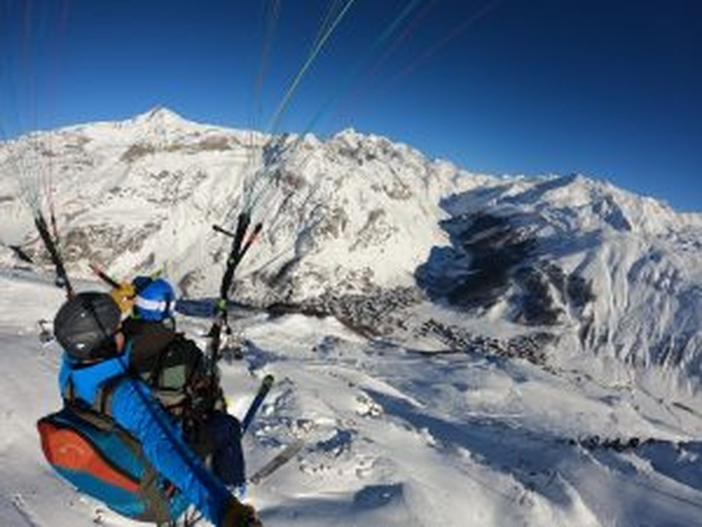
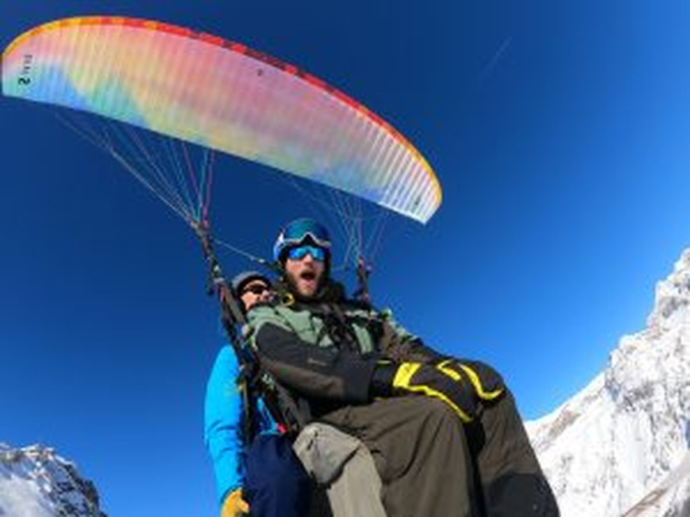
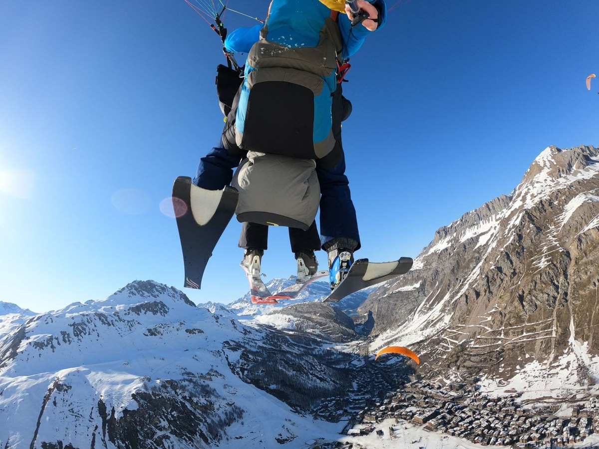

Découverte · dès 4 ans
Vol Solaise
Votre premier vol biplace au départ de Solaise : 700 mètres de dénivelé, un survol de la station de Val d'Isère et un panorama alpin à couper le souffle.
Voir les formules →Val d'Isère · Savoie
Baptêmes en parapente biplace au-dessus de la station de Val d'Isère, en Savoie. Au départ de Solaise ou de la Face Olympique de Bellevarde, vivez une expérience de vol unique encadré par un moniteur diplômé d'État, en toute sécurité.
Nos expériences



Vols biplace
Tarifs 2026 · bons cadeaux valables un an · enfant dès 4 ans.
120€
Le baptême idéal pour une première fois : décollage de Solaise, 700 m de dénivelé, survol de la station de Val d'Isère.
150€
Notre vol signature : décollage de la Face Olympique de Bellevarde, 800 m de dénivelé, panorama sur les glaciers savoyards.
150€
Vol de durée selon les conditions aérologiques, en deuxième partie de saison. Pour les amateurs de grands vols de montagne.
En images
Ils ont volé avec nous
Expérience absolument magique au-dessus de Val d'Isère ! La vue sur les glaciers depuis les airs est inoubliable. Moniteur rassurant et professionnel. Je recommande à 100 %.
Vol Olympique depuis Bellevarde : un rêve éveillé. 800 mètres de dénivelé, la Face Olympique sous les pieds et les Alpes à perte de vue. Un souvenir à vie.
Offert à mon mari pour son anniversaire, il est reparti avec les étoiles dans les yeux. Décollage de Solaise parfait, moniteur au top. Merci pour ce moment unique !
Vol thermique de durée en fin de saison : exceptionnel. Les paysages alpins de la Savoie depuis les airs, c'est quelque chose qu'on ne peut pas décrire. Merci !
J'avais peur au départ, mais le moniteur m'a tout de suite mise en confiance. Au final c'était grandiose ! Les glaciers vus du ciel, c'est inoubliable.
Accueil parfait en haut de la télécabine, matériel impeccable et quelle vue sur Val d'Isère ! Le bon cadeau a fait sensation. On reviendra l'année prochaine.
Une idée cadeau qui décolle
Anniversaire, Noël, une occasion à fêter ? Offrez un baptême en parapente au-dessus de Val d'Isère, dans un bon cadeau valable un an. Émotion et panoramas alpins garantis.
Réservation & contact
Une question, une date, un cadeau à offrir ? Écrivez-nous, on vous répond vite.